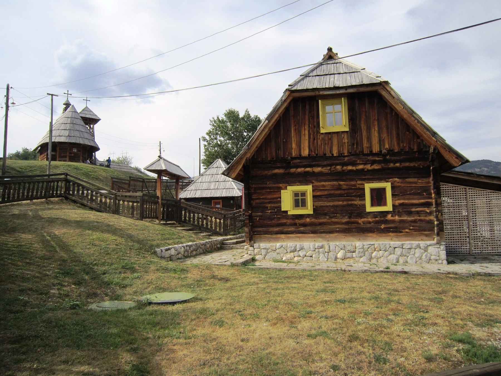
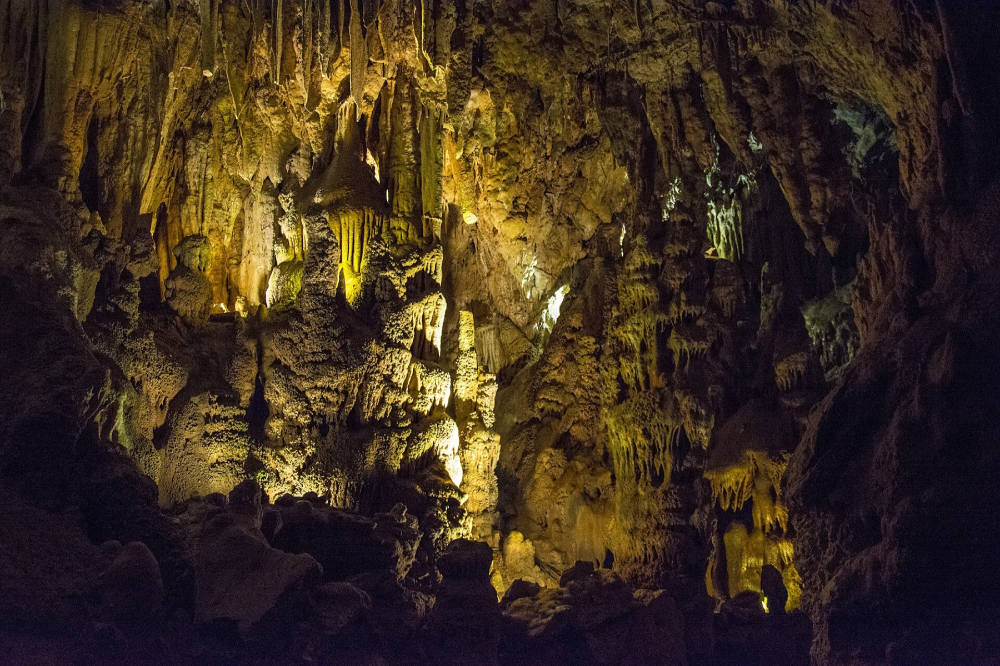
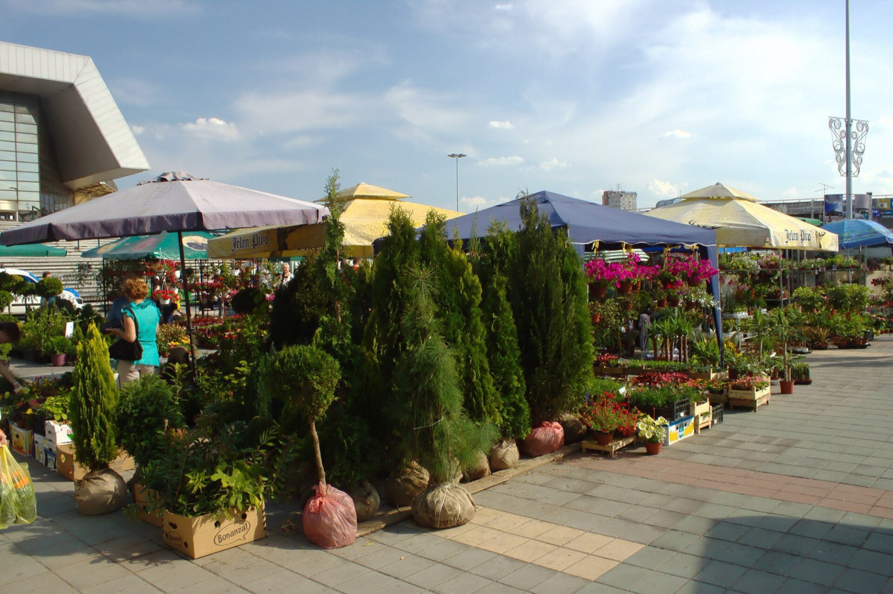
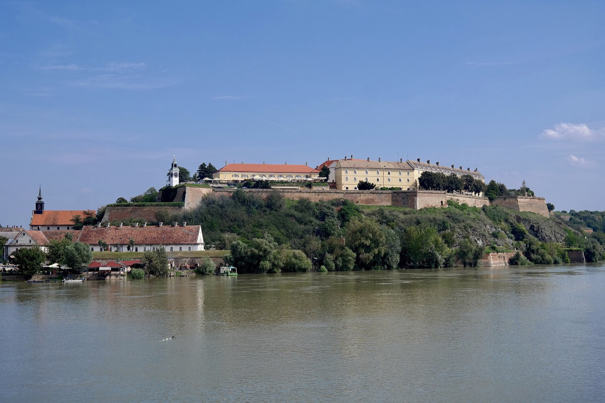
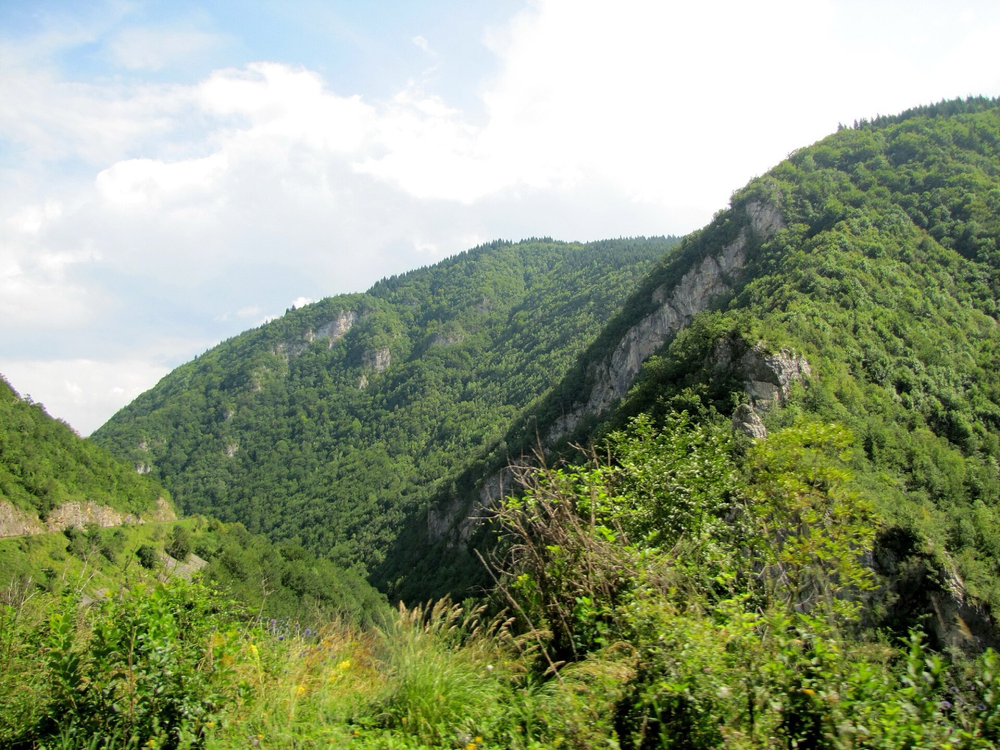
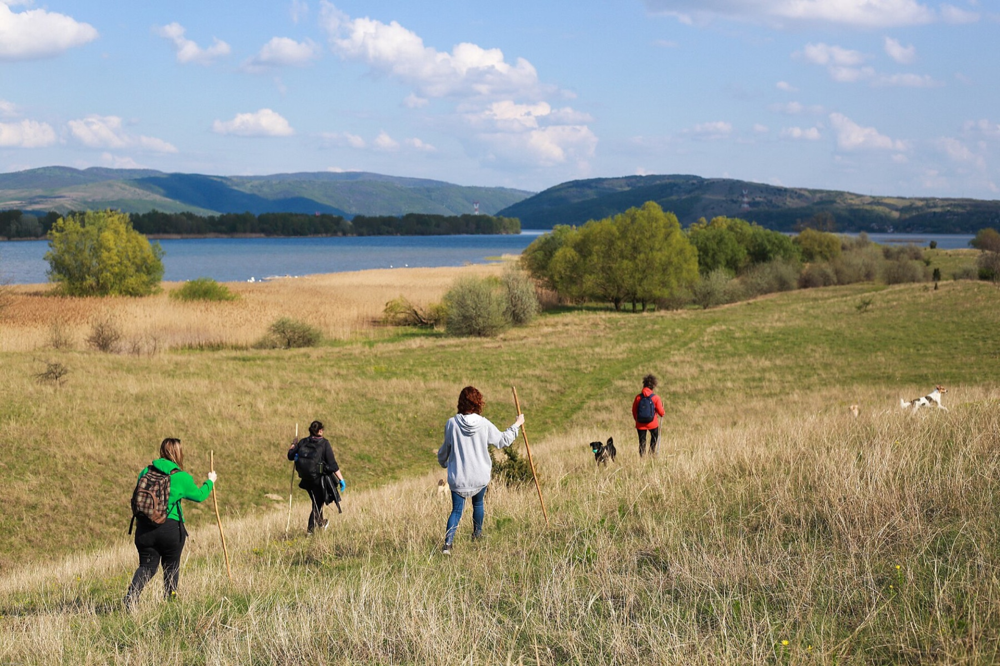
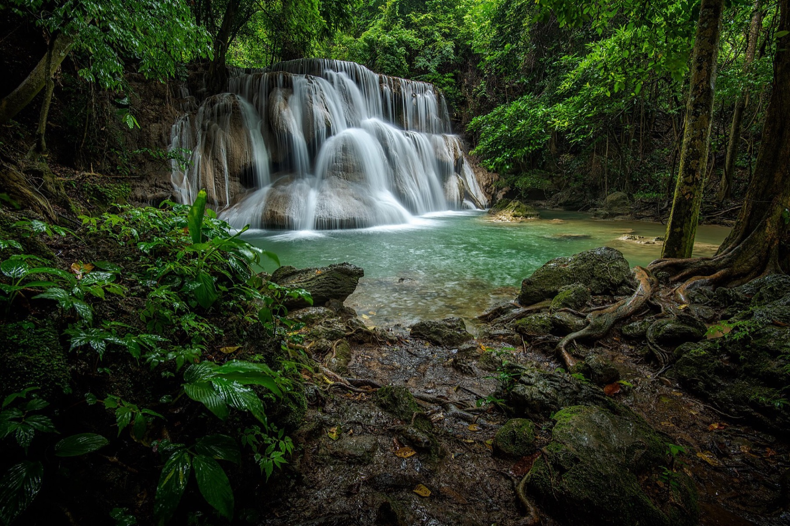

Destination
Serbia
River gorges, fortress towns and wildlife spectacles along the Danube and beyond.
River gorges, fortress towns and wildlife spectacles along the Danube and beyond.

Bends so perfectly shaped that the Uvac looks less like a river than a hand-drawn line on a map.

A medieval fortress, an 8,000-year-old settlement and a spectacular gorge, all bound together by one river.

A hundred kilometres between Golubac and Kladovo, measured in fortresses and river bends rather than minutes.

A wooden village built for a film that never stopped being lived in.

Forty minutes underground move through tens of millions of years of geological time.

A historic centre that never competes for your attention, and rewards you precisely because of that.

Fish stew, ražnjići and market stalls — a city best understood one dish at a time.

Sixteen kilometres of underground military galleries hide beneath one of Europe's great fortresses.

A medieval king's legend, a gorge full of wild lilacs, and a fortress watching from above.
Uvac CanyonTiming is everything: warm thermals and a late-morning start are what bring the vultures into the sky.

For a few weeks each spring, Europe's largest sand landscape turns into a flowering steppe.

Sunlit meadows and forest edges make this national park an unlikely butterfly hotspot.

Pampas, gauchos and small towns within reach of Buenos Aires — plus the penguin coast of Patagonia.
14 stories
Waterfalls, mountain forest and mangrove canals within a few hours of Bangkok.
16 stories